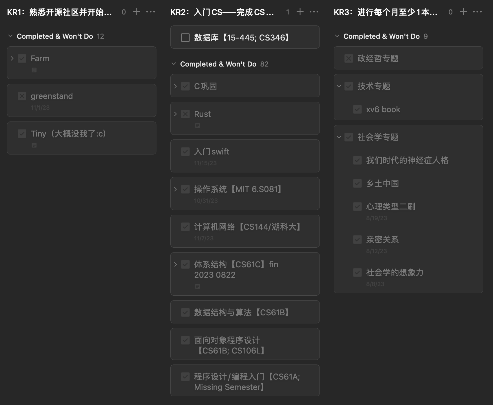
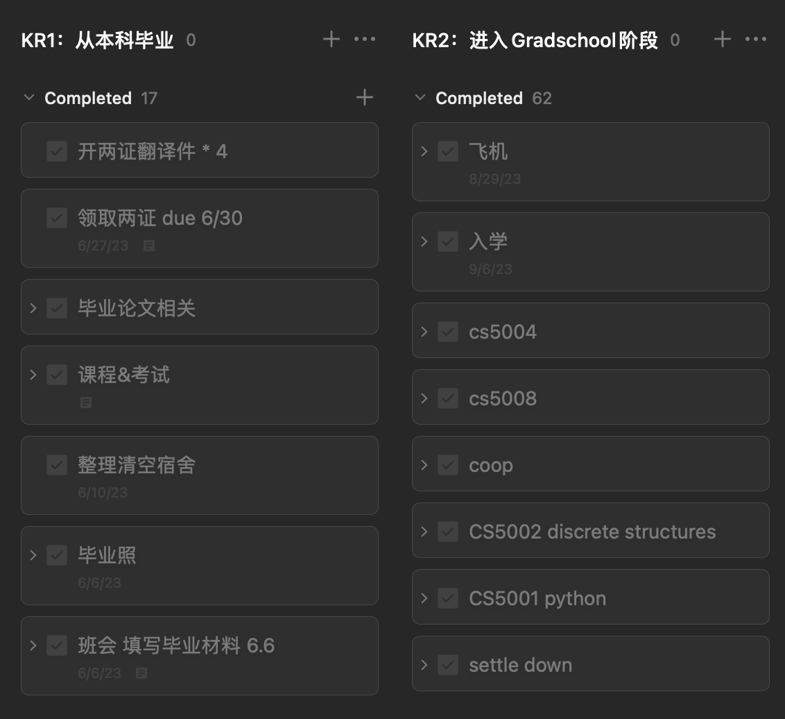

2023.6 - 2024.2 半年复盘
目录
- 前言
- 01 个人成长
- 02 学业
- 03 职业发展
- 04 个人健康
- 05 娱乐休闲
- 06 人际关系
- 07 财务管理
- 总结
前言
奇怪的复盘时间点
之所以选择在这个意味不明的时间节点进行review，是因为每年的2-5月是我学生生活的闲季，差不多是前半年学业考试结束和招聘季尘埃落定，后半年实习和秋招还未开始的时候。相比之下，每年年中年底或农历新年的时候往往处于水深火热中，心境上并不适合回顾过去、展望未来。
采用的人生管理模型
去年年中突发奇想地整理了年度目标管理，基于一个称为“生命之花”的模型和OKR机制系统化了曾经零散的年度flag。
这个模型把人生分为8个模块，包括个人成长、职业发展、财务、休闲娱乐、健康等。在实践时，我根据个人情况做了调整，去掉了暂时不打算顾及的模块，最后剩下的七个模块分别是：个人成长、学业、职业发展、个人健康、娱乐休闲、人际关系、财务管理。
具体参考的是这篇少数派的文章：毕业倒计时，我这样用 OKR 进行目标管理。
复盘方法
因为在立项（？嗯）时没有写文章介绍每个模块的OKR，所以会先开诚布公地展示一下去年六月各个部分的规划，然后复盘一下半年来的达成情况。
01 个人成长
我对这半年个人成长方面的期望是打好CS基础、接触tech community和持续培养人文素养这三块，由此设定了三个KR（Key Result）。
KR1：接触开源社区
我对接触开源社区这件事的定义是“学习过就算，能提pr更好”。
关于计划里的三个项目：Farm和Tiny是23年五六月份时闲来无事筹划着参与GSOC和开源之下这样的开源实习时学习的前端/前端infra的项目。Greenstand是来美上学后一次招募贡献者的宣讲时听说的项目。
这三个的完成情况：
- Farm：这是一个前端打包工具，core是Rust写的，外面用js/ts写了一层api调用core的功能。暑假里我学了下js/ts部分的代码库，提交了几次pr，勉强算有一点（但不多）的实质性贡献
- Tiny：为了申请开源之夏的项目而仔细学习的前端组件库，借此机会熟悉了几个前端框架Vue&React。学是学了，但是后来申请没选上，所以没有进一步做贡献。
- Greenstand：如果我没理解错，这其实是一个软件公司的开源产品。但开学后时间有限，我并没有后续深入了解这个产品，中途放弃了这个目标。
KR2：入门CS——完成CS基础课
个人的转码规划并不是xhs刷题三月上岸类型的，而是把自己当作晚开始几年的半科班，通过自学开源的知名网课把大部分专业基础课都学一遍，然后才开始进行求职方面的努力。
完成情况：
总的来说是基本完成了。根据csdiy，这从23年2月开始截止24年2月分门别类地学完了编程入门（cs61a），面向对象设计/数据结构与算法（cs61b和学校的cs5004），计算机体系结构（cs61c和学校的cs5008），操作系统（MIT 6.S081），计算机网络（b站的湖科大网课和一点点cs144）。
大体如图所示，几门大课都完成了能写的所有lab、homework和project并记了些笔记，可以在我的github里找到相应代码仓库/在blog里找到部分笔记post。只有一门数据库没有时间践行，因为学了没地方用不如不学，所以打算留到或许有空的下下个半年。
KR3：进行每个月至少1本书的专题阅读
虽然转专业到了理工科，但在比较有限的业余时间里，我并不想因为一心追求技术上的精进而变成精神贫瘠的文化沙漠，因此我打算延续本科时的阅读习惯，读一些non-fiction涨涨见识。
完成情况：
-
社会学的书读完了6本。
-
技术方面，在学操作系统课的时候顺便读完了xv6论文，也勉强算1本。
-
PPE的阅读计划是一点没实现，只有2-3本在读的，能还是需要更加大块的时间专注地读完。
-
其实还读了2本严肃小说、2本认知类的nonfic和14本轻小说（。），但这大概不属于“成长”规划范畴内，就不记录了。
02 学业
学业上的目标无非是平滑地从本科生过渡到研究生，完成课业和各种程序性的事情，因为自学才是真正的「学业」，所以这块没什么好多说的。关于这段经历我记录过一些，随机分布在毕业总结、年度总结和随笔里。
更重要的是无法体现在todo list上的心态转变，因为没有读博的打算，所以某种意义上，从本科毕业的那一刻起我就已经踏出象牙塔，需要直面社会现实了。
KR1：本科毕业
完成情况：
- 上完了最后几门专业课
- 完成了毕业论文
- 走完了毕业材料、两证的流程（四年=两张纸）
KR2：进入研究生阶段
完成情况：
- 顺利落地、办各种手续、入学
- 上了四门课（项目规定前两个学期只能上四门）
03 职业发展
KR1：找到7/10分以上的实习
打分参考上面说的文章，一共五个方面，每个方面有两分。
- **行业：**行业发展前景，是夕阳产业、新兴产业还是已经成熟规模化的产业
- **企业：**企业在该赛道内的地位
- **职业：**在企业做什么，属于什么序列，该序列的发展前景
- **城市：**个人喜好与城市发展前景，偏主观
- **待遇：**包括总包薪水与隐性福利
KR2：完成一份7分的简历
KR3：根据兴趣确认发展方向
KR4：学完工业主流技术栈
04 个人健康
我对健康的期望是：精神稳定+身材管理。
总结
完成得不错
后续可能不会以半年为周期，因为在实践的时候发现哪怕非常轮廓式的规划都赶不上现实的变化。初步想法是设定半年内需要完成的milestone，然后以两个月到一个季度为周期复盘，方便灵活变通。